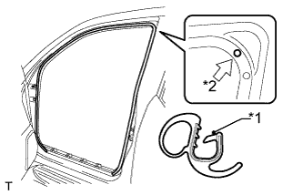

ЗАДНИЙ ДАТЧИК СИСТЕМЫ SRS (для 3-дверной модели) > УСТАНОВКА |
| 1. УСТАНОВИТЕ ЛЕВЫЙ ЗАДНИЙ ДАТЧИК СИСТЕМЫ SRS |
Выключите зажигание.
Отсоедините провод от отрицательного (-) вывода аккумуляторной батареи.
Установите задний датчик системы SRS и закрепите его гайкой.
Убедитесь, что крепление заднего датчика системы SRS не ослаблено.
Подсоедините разъем.
| 2. УСТАНОВИТЕ ЛЕВУЮ БОКОВУЮ ОБЛИЦОВОЧНУЮ ПАНЕЛЬ ПОЛКИ БАГАЖНОГО ОТДЕЛЕНИЯ В СБОРЕ |
Введите в зацепление 9 захватов и 11 фиксаторов, чтобы установить боковую облицовочную панель полки багажного отделения.
Вверните 3 болта и 2 винта.
Установите напольное крепление ремня безопасности заднего сиденья № 1 и закрепите его болтом.
Установите напольное крепление наружных ремней безопасности передних сидений и закрепите его болтом.
| 3. УСТАНОВИТЕ НАКЛАДКУ ПОЯСНОГО РЕМНЯ БЕЗОПАСНОСТИ |
Введите в зацепление 3 захвата, чтобы установить накладку крепления поясного ремня безопасности.
| 4. УСТАНОВИТЕ ПЕРЕДНЮЮ БОКОВУЮ ОБЛИЦОВОЧНУЮ НАКЛАДКУ ПОЛКИ БАГАЖНОГО ОТДЕЛЕНИЯ (для моделей с задней крышкой) |
Введите в зацепление 2 захвата, чтобы закрепить переднюю боковую облицовочную накладку полки багажного отделения.
| 5. УСТАНОВИТЕ КОЛПАЧОК КРЕПЛЕНИЯ ЗАДНЕЙ КРЫШКИ № 1 (для моделей без задней крышки) |
Введите в зацепление 2 захвата, чтобы закрепить колпачок крепления задней крышки.
| 6. УСТАНОВИТЕ ЗАЩЕЛКУ ОБЛИЦОВКИ БАГАЖНОГО ОТДЕЛЕНИЯ № 1 |
Установите защелку облицовочной панели багажного отделения № 1 так, чтобы она была расположена горизонтально.
| 7. УСТАНОВИТЕ ЗАДНИЙ НАПОЛЬНЫЙ КОВРИК |
Установите задний напольный коврик.
| 8. УСТАНОВИТЕ КРЫШКУ ОТВЕРСТИЯ В ЛЕВОЙ ЗАДНЕЙ БОКОВОЙ ОБЛИЦОВОЧНОЙ НАКЛАДКЕ |
Введите в зацепление 2 захвата и 2 направляющих, чтобы установить крышку отверстия в задней боковой облицовочной панели.
| 9. УСТАНОВИТЕ ЗАДНЮЮ ОПОРНУЮ ПЛАСТИНУ КОВРИКА ЗАДНЕГО ПОЛА |
Введите в зацепление 6 захватов, чтобы установить заднюю опорную пластину коврика заднего пола.
Заверните 5 винтов.
| 10. УСТАНОВИТЕ НАКЛАДКУ КОМПЛЕКТА НАПОЛЬНЫХ КОВРИКОВ |
Введите в зацепление 2 захвата, чтобы установить накладку установочной пластины коврика.
| 11. УСТАНОВИТЕ ЗАДНЮЮ КРЫШКУ В СБОРЕ (для моделей с задней крышкой) |
Установите заднюю крышку.
| 12. УСТАНОВИТЕ УПЛОТНИТЕЛЬ ОБШИВКИ ПРОЕМА ЛЕВОЙ ПЕРЕДНЕЙ ДВЕРИ |
|  |
Совместите нанесенную краской отметку на уплотнителе обшивки проема передней двери с отмеченным положением на автомобиле и установите уплотнитель обшивки проема передней двери, как показано на рисунке.
| *1 | Метка, нанесенная краской |
| *2 | Положение метки |
| 13. УСТАНОВИТЕ ОПОРНУЮ НАКЛАДКУ ЛЕВОЙ ДВЕРИ В СБОРЕ |
Введите в зацепление 4 фиксатора, 10 захватов и 2 направляющие, чтобы установить опорную накладку двери.
| 14. УСТАНОВИТЕ ЗАДНЕЕ СИДЕНЬЕ № 1 В СБОРЕ |
для сидений раздельного типа 60/40 с двойным складыванием с левой стороны:
Установите заднее сиденье № 1 в сборе (Нажмите здесь).
для сидений раздельного типа 60/40 с двойным складыванием с правой стороны:
Установите заднее сиденье № 1 в сборе (Нажмите здесь).
для опускаемых сидений раздельного типа 60/40 с левой стороны:
Установите заднее сиденье № 1 в сборе (Нажмите здесь).
для опускаемых сидений раздельного типа 60/40 с правой стороны:
Установите заднее сиденье № 1 в сборе (Нажмите здесь).
Для выдвижного раздельного сиденья 60/40 с функцией облегчения посадки с левой стороны:
Установите заднее сиденье № 1 в сборе (Нажмите здесь).
Для выдвижного раздельного сиденья 60/40 с функцией облегчения посадки с правой стороны:
Установите заднее сиденье № 1 в сборе (Нажмите здесь).
| 15. ПОДСОЕДИНИТЕ ПРОВОД К ОТРИЦАТЕЛЬНОМУ ВЫВОДУ АККУМУЛЯТОРНОЙ БАТАРЕИ |
| 16. ПРОВЕРЬТЕ КОНТРОЛЬНУЮ ЛАМПУ АВАРИЙНОГО СОСТОЯНИЯ SRS |
Проверьте контрольную лампу аварийного состояния SRS (Нажмите здесь).